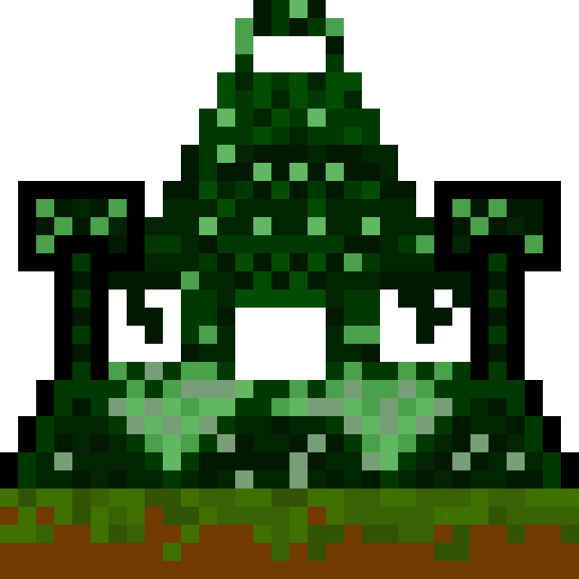
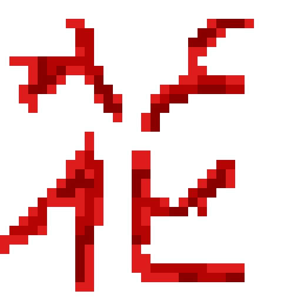
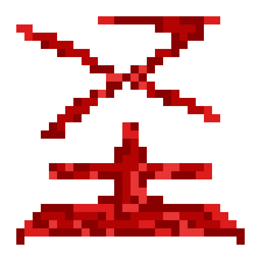
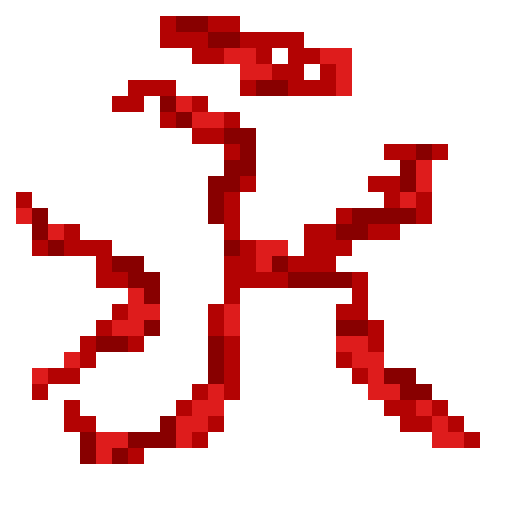

Project Operations Board
Production-first systems with strict engineering discipline.

Temple of Code
Core archive node for architecture decisions, service rituals, and production artifacts.

API Service
REST API in Go with JWT auth, Docker deployment, structured logging, and durable PostgreSQL schema design.
Go
PostgreSQL
Docker
JWT
Stable Release
Risk: Low
Repository

Telegram Bot
Automation bot with scheduling flows, reusable templates, and robust command execution pipeline for daily operations.
Go
Telegram API
Scheduler
PostgreSQL
Expansion Phase
Risk: Medium
Repository

gRPC Microservice
Service-to-service gRPC component with Kafka events, observability-ready logs, and clean bounded-context communication.
Go
gRPC
Kafka
Observability
Integration Testing
Risk: Medium
Repository